전자계산기기사 (2020-09-26 기출문제)
1과목: 시스템 프로그래밍
1. 로더의 기능 중 실행 프로그램에 할당된 기억공간에 실제로 옮기는 기능은?
- Loading
- Allocation
- Linking
- Relocation
(정답률: 42%)

2. 파일 시스템의 기능 및 특징이 아닌 것은?
- 파일을 안정하게 사용할 수 있도록 보호되어야 한다.
- 사용자가 파일을 생성, 수정, 제거할 수 있도록 한다.
- 파일은 주로 주기억장치에 저장하며 사용한다.
- 파일의 정보가 손실되지 않도록 데이터 무결성을 유지한다.
(정답률: 66%)
3. 프로세스(Process)의 정의 중 틀린 것은?
- PCB를 가진 프로그램
- 프로시저가 활동중인 것
- 프로세서가 할당 되는 실체
- 동기적 행위를 일이키는 주체
(정답률: 55%)
4. 언어변역 프로그램이 아닌 것은?
- linker
- compiler
- assembler
- interpreter
(정답률: 68%)
5. 가상메모리의 특징으로 틀린 것은?
- 보조기억장치를 이용한 주기억장치의 용량 확보이다.
- 오버레이(Overlay) 문제가 자동적으로 해결된다.
- 주기억장치 이용률과 다중 프로그래밍의 효율을 높일 수 있다.
- 사용가능한 보조기억장치는 SASD 장치이어야 한다.
(정답률: 45%)
6. 시스템 소프트웨어 구성 중 제어 프로그램이 아닌 것은?
- 감시 프로그램
- 서비스 프로그램
- 작업 제어 프로그램
- 자료 관리 프로그램
(정답률: 43%)
7. 이중 패스 어셈블러의 특징 중 틀린 것은?
- 프로그램 크기가 작다.
- 별도의 다른 코드와 결합할 수 있다.
- 기호 테이블을 이용하여 목적 프로그램을 생성한다.
- 기호를 정의하기 전에 사용 가능하므로 프로그램 작성이 용이하다.
(정답률: 22%)
8. 프로그램밍 언어 중 모델의 계산을 위해 기호논리와 집합론을 이용하는 언어는?
- C언어
- Smalltalk
- PROLOG
- LISP언어
(정답률: 40%)
9. 절대로더(Absolute Loader)에서 할당과 연결을 수행하는 주체는?
- 로더
- 어셈블러
- 프로그래머
- 어셈블러와 로더
(정답률: 38%)
10. 어셈블리어에서 사용되는 명령 중 의사명령이 아닌 것은?
- END
- BNE
- EQU
- DROP
(정답률: 44%)
11. 2-패스 어셈블러 구조에서 패스 2의 목적에 해당되는 것은?
- 기호들의 값을 찾음
- 리터럴(literal)들의 기억
- 기계어 명령어의 길이 결정
- 위치 계수기(Location counter)의 상태 파악
(정답률: 36%)
12. 매크로프로세서의 기본적인 수행 작업으로 틀린 것은?
- 매크로 정의
- 매크로 확장
- 매크로 호출
- 매크로 소멸
(정답률: 55%)
13. 언어 번역 프로그램이 생성한 목적프로그램과 또 다른 목적 프로그램, 라이브러리 함수 등을 연결하여 실행 가능한 프로그램을 만드는 것은?
- 어셈블러(assembler)
- 인터프리터(interpreter)
- 연결 편집기(Linkage Editor)
- 프리프로세서(preprocessor)
(정답률: 52%)
14. 어셈블리어에 대한 설명으로 틀린 것은?
- 기계어와 1:1로 대응시켜 코드화한 기호 언어이다.
- 사용자가 프로그램을 쉽게 읽고 이해할 수 있다.
- 프로그램에 기호화된 명령 및 주소를 사용한다.
- 작성한 CPU마다 사용되는 어셈블리어는 모두 같다.
(정답률: 54%)
15. 별도의 로더없이 언어 번역 프로그램이 로더의 기능까지 수생하는 방식의 로더는?
- Absolute Loader
- Direct Linking Loader
- Compile And Go Loader
- Dynamic Loading Loader
(정답률: 38%)
16. 시스템 소프트웨어와 그 기능의 연결이 틀린 것은?
- 로더 : 실행 가능한 프로그램을 기억 장치로 적재
- 디버거 : 실행 시간 오류 및 에러 발생 시 기계 상태 검사 및 수정
- 링커 : 저급언어로 작성된 원시프로그램을 목적 프로그램과 연결
- 어셈블러 : 저급언어로 작성된 원시프로그램을 목적 프로그램으로 변환
(정답률: 36%)
17. 운영체제를 적재할 수 있도록 하는 것으로, ROM에 저장되어 있으며 메모리가 비어있는 상태에서 처음을 실행되는 프로그램은?
- 매크로
- 부트로더
- 컴파일러
- 스케줄러
(정답률: 66%)
18. 시스템 프로그램의 역할이 아닌 것은?
- 인터럽트를 관리한다.
- 주변 장치를 관리한다.
- 복잡한 계산을 처리한다.
- 프로그램을 기억 장치에 상주시킨다.
(정답률: 48%)
19. 서브루틴에서 자신을 호출한 곳으로 복귀시키는 어셈블리어 명령은?
- SUB
- MOV
- RET
- INT
(정답률: 68%)
20. 로더(Loader)의 기능에 해당하지 않는 것은?
- Allocation
- Loading
- Translation
- Linking
(정답률: 60%)
2과목: 전자계산기구조
21. 병렬 컴퓨터의 특징으로 틀린 것은?
- 처리 속도가 빠르다.
- 프로그램 작성이 쉽다.
- 기억장치를 공유할 수 있다.
- 일부 하드웨어 오류가 발생하여도 전체 시스템은 동작할 수 있다.
(정답률: 57%)
22. 비교적 속도가 빠른 자기디스크에 연결하는 채널은?
- 서브 채널
- 바이트 채널
- 셀렉터 채널
- 멀티플렉서 채널
(정답률: 47%)
23. 4비트로 자료를 표시할 때 2진화 16진수는 2진화 십진수(BCD)에 비해 몇 개를 더 표시할 수 있는가?
- 0
- 2
- 4
- 6
(정답률: 46%)
24. 인터럽트 처리루틴을 사용하지 않고 직접인터럽트 취급 루틴의 수행을 개시할 수 있도록 각 장치의 인터럽트 취급 루틴으로 분기하는 명령어들로 구성된 부분은?
- 채널 명령어
- 인터럽트 벡터
- 인터럽트 체인
- 인터럽트 분기 루틴
(정답률: 29%)
25. 캐시 기억장치의 특징 중 틀린 것은?
- 주기억장치와 CPU의 속도 차이를 줄이기 위해 사용된다.
- 주기억장치와 CPU 사이에서 일종의 버퍼기능을 수행한다.
- 주기억장치와 CPU의 정보 교환을 위해 임시 보관하는 장치이다.
- CPU에서 실행 중인 프로그램과 데이터를 기억한다.
(정답률: 16%)
26. 다음에 실행할 마이크로명령어의 주소를 저장하는 레지스터로, 제어 기억장치의 특정위치를 가리키는 제어장치의 구성 요소는?
- Control Memory
- Instruction Decoder
- Control Buffer Register : CBR
- Control Address Register : CAR
(정답률: 55%)
27. 모든 마이크로 오퍼레이션에 대한 서로 다른 마이크로 사이클 시간을 할당하는 방식은?
- 비동기식
- 동기가변식
- 동기고정식
- 비동기가변식
(정답률: 19%)
28. 자기 디스크의 특징이 아닌 것은?
- 액세스 시간이 빠르다.
- 레코드의 추가, 삭제, 정정하기 쉽다.
- 순차 처리와 랜덤 처리를 병행할 수 있다.
- 자기 테이프보다 가격이 저렴하고 대용량이다.
(정답률: 52%)
29. I/O operation과 관계없는 것은?
- Channel
- Handshaking
- Interrupt
- Emulation
(정답률: 42%)
30. 조합논리회로가 아닌 것은?
- 디코더
- 반가산기
- 플립플롭
- 멀티플렉서
(정답률: 52%)
31. 인터럽트 발생 시 CPU가 확인하여야 할 사항으로 틀린 것은?
- 상태 조건의 내용
- DMA의 내용
- 프로그램 카운터의 내용
- 프로그램에서 사용한 모든 레지스터의 내용
(정답률: 25%)
32. 컴퓨터의 연산자(Op-code)의 기능이 아닌 것은?
- 함수 연산 기능
- 전달 기능
- 제어 기능
- 기억 기능
(정답률: 34%)
33. 중앙연산처리장치에서 마이크로 오퍼레이션이 순서적으로 일어나게 하기 위해 필요한 것은?
- 레지스터
- 누산기
- 스위치
- 제어신호
(정답률: 26%)
34. 다음 마이크로 오퍼레이션과 관련 있는 사이클은?
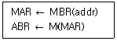
- 실행 사이클
- 간접 사이클
- 인터럽트 사이클
- 적재 사이클
(정답률: 32%)
35. 제어징치의 기능에 대한 설명 중 틀린 것은?
- 입력장치의 내용을 기억장치에 기록한다.
- 기억장치의 내용을 연산장치에 옮긴다.
- 가상메모리에 있는 프로그램을 해독한다.
- 기억장치의 내용을 출력장치에 옮긴다.
(정답률: 35%)
36. 논리식
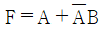
를 간소화한 식으로 옳은 것은?- F = AB
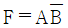
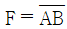
- F = A + B
(정답률: 46%)
37. 내부 인터럽트의 원인이 아닌 것은?
- 불법적인 명령어 사용을 하는 경우
- 정전이 되거나 전원 이상이 있는 경우
- overflow 또는 0(zero)으로 나누는 경우
- 보호 영역내의 메모리 주소를 access 하는 경우
(정답률: 49%)
38. 명령어의 구성 형태 중 하나의 오퍼랜드만 포함하고 다른 오퍼랜드나 결과 값은 누산기에 저장되는 명령어 형식은?
- 0-주소명령어
- 1-주소명령어
- 2-주소명령어
- 3-주소명령어
(정답률: 52%)
39. 그레이 코드에 대한 설명으로 틀린 것은?
- 자기 보수의 특성을 가지고 있다.
- 가중치를 갖지 않는 코드이다.
- 코드 변환을 위해 XOR 게이트를 사용한다.
- 아날로그/디지털 변환기를 제어하는 코드에 사용된다.
(정답률: 28%)
40. 기억장치 중 기억된 자료가 일정시간이 경과하면 소멸되는 장치는? (단, 별도의 보관 방법을 사용하지 않음)
- Static memory
- Core memory
- Dynamic memory
- Destructive memory
(정답률: 45%)
3과목: 마이크로전자계산기
41. 플래그(flag) 레지스터가 나타나는 상태가 아닌 것은?
- carry의 발생
- overflow의 발생
- 연산 결과의 부호
- 인덱스(index) 레지스터의 증감 상태
(정답률: 31%)
42. RISC(Reduced Instruction Set Computer)에 대한 설명으로 틀린 것은?
- 하드웨어에서 스택을 지원한다.
- 빠른 명령어 해석을 위해 고정 명령어 길이를 사용한다.
- 메모리 접근 횟수를 줄이기 위해 많은 수의 레지스터를 사용한다.
- 비교적 전력 소모가 작기 때문에 임베디드 프로세서에도 채택되고 있다.
(정답률: 17%)
43. 마이크로컴퓨터 운영체제의 기능이 아닌 것은?
- 파일 보호
- 파일 디렉터리 관리
- 상주 모니터로의 모드 전환
- 사용자 프로그램의 번역 및 실행
(정답률: 49%)
44. 조건부 분기명령의 실행에서 수행되어야 할 다음 명령어를 결정하기 위해서는 어느 레지스터의 내용을 조사하는가?
- 상태 레지스터(Status Register)
- 인덱스 레지스터(Index Register)
- 명령 레지스터(Instruction Register)
- 메모리 주소 레지스터(Memory Address Register)
(정답률: 32%)
45. 스택(stack)에 자료 전송 시 사용되는 명령어 형식은?
- 0-주소 명령어 형식
- 1-주소 명령어 형식
- 2-주소 명령어 형식
- 3-주소 명령어 형식
(정답률: 55%)
46. 기억장치의 특성을 결정하는 요소가 아닌 것은?
- Idle mode
- 기억용량
- Access Time
- Bandwidth
(정답률: 40%)
47. 다음 중 성격이 다른 시스템 프로그램은?
- 로더
- 컴파일러
- 어셈블러
- 인터프리터
(정답률: 55%)
48. 마이크로프로세서에서 같은 프로그램이 한 프로그램에 여러 번 사용될 경우 이것을 별도의 프로그램으로 만들어 두고 필요한 때마다 호출하여 사용하는 프로그램은?
- 분기 명령
- 반복 명령
- 회전 명령
- 서브루틴 명령
(정답률: 49%)
49. SRAM이 DRAM보다 장점인 특성은?
- 전력손실
- 메모리 용량
- 비트당 가격
- 액세스 기간
(정답률: 33%)
50. 입·출력 요구가 있는지를 CPU가 수시로 점검해야 되는 입·출력 방식은?
- DMA
- isolated I/O
- interrupt I/O
- programmed I/O
(정답률: 28%)
51. Vectored Interrupt에 대한 설명 중 옳은 것은?
- 입·출력장치가 주소를 지정해 주므로 응답시간이 빠르다.
- CPU는 Interrupt 요구장치를 판별하기 위하여 daisy chain을 이용한다.
- Interrupt에 대한 응답방법 중 가장 많은 소프트웨어가 필요하다.
- 회로가 단순하고 추가적인 하드웨어가 필요 없으므로 경제적이다.
(정답률: 28%)
52. PLA의 프로그래밍에 대한 설명으로 옳은 것은?
- AND 배열만 프로그래밍 한다.
- OR 배열만 프로그래밍 한다.
- 프로그래밍을 할 필요가 없다.
- AND와 OR 배열 모두를 프로그래밍 할 수 있다.
(정답률: 39%)
53. DMA(Direct Memory Access)의 설명 중 틀린 것은?
- CPU와 DMA 제어기는 메모리와 버스를 공유한다.
- DMA는 블록으로 대용량의 데이터를 전송할 수 있다.
- CPU의 부담이 없어 빠른 데이터 전송이 가능하다.
- DMA는 Data의 입·출력 전송이 직접 Memory 장치와 CPU 사이에서 이루어지는 interface를 말한다.
(정답률: 25%)
54. 명령어 속에 오퍼랜드가 직접 내장되어 있는 주소 지정 방식은?
- Register mode
- Immediate mode
- Direct address mode
- Relative address mode
(정답률: 30%)
55. 입력과 출력의 독립 제어점을 갖는 8비트로 구성된 5개의 레지스터에 상호 병렬 데이터 전송이 가능하기 위한 데이터 선의 수는?
- 8
- 40
- 80
- 160
(정답률: 25%)
56. 8비트 마이크로프로세서의 일반적인 내부 버스와 레지스터의 크기는?
- 4 bit
- 8 bit
- 16 bit
- 32 bit
(정답률: 38%)
57. 마이크로프로그램 제어 명령어(Micro-program Control Instruction) 중에서 번지가 필요 없는 무번지 명령은?
- CPL(complement)
- BR(branch)
- AND(and)
- CALL(call)
(정답률: 27%)
58. 명령어에 대한 설명으로 틀린 것은?
- 명령어의 형식은 OP Code 와 Operand로 구성된다.
- 컴퓨터가 어떻게 동작해야 하는지를 나타내는 것이다.
- 연산장치에서 해독되어 그 동작이 이루어진다.
- 컴퓨터가 동작해야 할 명령을 차례대로 모아 놓은 것을 프로그램이라 한다.
(정답률: 47%)
59. CPU가 시스템 버스를 사용하지 않는 시간을 이용하여 DMA 기능을 수행하는 방식은?
- Burst 방식
- Paging 방식
- Interrupt 방식
- Cycle stealing 방식
(정답률: 50%)
60. 인터럽트 처리과정의 순서로 옳은 것은?
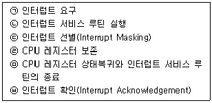
- ㉠-㉥-㉢-㉣-㉡-㉤
- ㉠-㉢-㉥-㉣-㉡-㉤
- ㉠-㉣-㉢-㉥-㉡-㉤
- ㉠-㉣-㉢-㉡-㉥-㉤
(정답률: 23%)
4과목: 논리회로
61. 500kHz의 클록 펄스(clock pulse)를 T플립플롭의 clock 입력에 인가하였을 경우 출력 Q의 클록 펄스 주기는 몇 μs 인가? (단, 출력
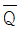
는 입력 T에 연결되어 있다.)- 2
- 4
- 6
- 8
(정답률: 25%)
62. A/D 변환기 변환 데이터의 니블(nibble)은 몇 비트(bit)를 사용하는 것인가?
- 4
- 8
- 16
- 32
(정답률: 25%)
63. 컴퓨터 연산기에서 수행되는 연산 알고리즘에 의해 2진수 연산을 수행할 때 상태초과(overflow)가 발생하지 않는 연산은?
- 부호가 다른 두 수의 덧셈
- 부호가 다른 두 수의 뺄셈
- 곱셈
- 나눗셈
(정답률: 16%)
64. 다음 수를 8421 코드로 표시하고 최하위 자리에 기수패리티 비트를 붙여 쓰면?
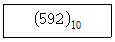
- 1001 0100 001
- 1001 0100 000
- 0101 1001 0010 1
- 0101 1001 0010 0
(정답률: 29%)
65. 다음 회로가 나타내는 것은?
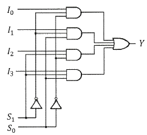
- 2 × 4 decoder
- 3 × 8 decoder
- 4 × 1 multiplexer
- 4 × 2 multiplexer
(정답률: 26%)
66. 시프트 레지스터의 내용을 왼쪽으로 한번 시프트하면 원래의 데이터는?
- 원래 데이터의 1/4 이 된다.
- 원래 데이터의 1/2 이 된다.
- 원래 데이터의 2배가 된다.
- 원래 데이터의 4배가 된다.
(정답률: 44%)
67. 다음 중 가장 큰 수는?
- 10진수 245
- 8진수 455
- 16진수 FC
- 2진수 11101011
(정답률: 40%)
68. 다음 논리회로를 가장 간단히 하면?
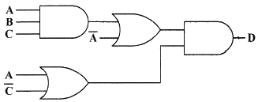
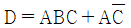
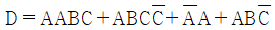
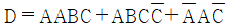
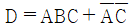
(정답률: 37%)
69. 다음 회로와 같은 기능을 하는 게이트(gate)는? (단, A, B는 입력, Y는 출력이다.)
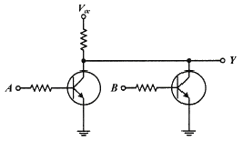
- NAND 게이트
- NOR 게이트
- XOR 게이트
- OR 게이트
(정답률: 25%)
70. 그림과 같이 74HC14를 사용하여 슈미트 트리거 발진기의 발진주파수는 몇 kHz 인가? (단, R = 10kΩ, C = 0.0⑤ ㎌ 이다.)
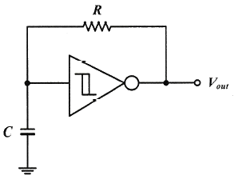
- 16
- 17
- 24
- 25
(정답률: 38%)
71. 다음의 회로를 설명한 것으로 옳은 것은?
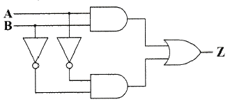
- 출력 Z=A+B와 같다.
- 반감산기 회로이다.
- 일치회로이다.
- 덧셈의 캐리를 발생하는 회로이다.
(정답률: 36%)
72. 다음 진리표(turth table)에서 출력 Y를 최소화 한 결과는?
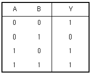
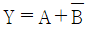
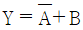
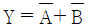
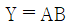
(정답률: 42%)
73. 8421코드에서 입력 ABCD가 1001 일 때만 출력이 1인 경우에 해당하는 것은? (단, 8421 코드에서 사용되지 않는 상태는 don't care로 간주한다.)
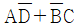
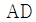
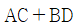
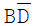
(정답률: 39%)
74. 2진수 10110101을 그레이코드(gray code)로 변환한 결과로 옳은 것은?
- 01001010
- 01001011
- 00010000
- 11101111
(정답률: 56%)
75. JK 플립플롭을 사용하여 2진 리플 계수기를 만들려는 경우 J와 K의 값은?
- J = 0, K = 0
- J = 0, K = 1
- J = 1, K = 0
- J = 1, K = 1
(정답률: 22%)
76. 다음 회로에 대한 설명으로 옳은 것은?
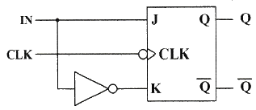
- 클록 분주기 회로이다.
- JK 플립플롭을 사용한 T 플립플롭이다.
- INPUT을 카운터 할 수 있는 카운터 회로이다.
- JK 플립플롭을 사용한 D플립플롭이다.
(정답률: 30%)
77. 입력 address line 이 12개, 출력 data line이 4개인 EPROM의 기억 용량은?
- 2 Kbyte
- 4 Kbyte
- 2048 Kbyte
- 4096 Kbyte
(정답률: 0%)
78. 다음 제시된 조건에 따라 간략화한 f의 값은?
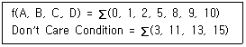
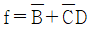
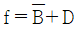
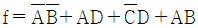
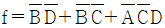
(정답률: 4%)
79. 다음 카운터 회로에서 Q1, Q2, Q3의 초기상태가 각각 0, 0, 0 이었다. CLOCK이 6번 들어갔을 때 Q1, Q2, Q3의 상태 중 옳은 것은?
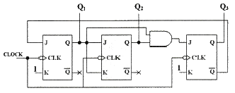
- Q1 = 0, Q2 = 0, Q3 = 1
- Q1 = 1, Q2 = 0, Q3 = 0
- Q1 = 0, Q2 = 1, Q3 = 1
- Q1 = 1, Q2 = 1, Q3 = 0
(정답률: 35%)
80. 다음은 NOR 게이트로 구성된 기본 플립플롭이다. S단의 입력값이 1이고, R단의 입력값이 0인 경우 출력 Q 및 Q′의 값은?
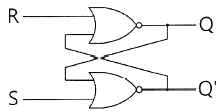
- Q = 1, Q′ = 0
- Q = 1, Q′ = 1
- Q = 0, Q′ = 0
- Q = 0, Q′ = 1
(정답률: 30%)
5과목: 데이터통신
81. 100MHz의 반송파를 주파수 4kHz의 변조신호로 최대 주파수편이 75kHz를 갖게 FM 변조했을 때 소요 주파수 대역(kHz)은?
- 150
- 154
- 158
- 162
(정답률: 28%)
82. PCM 신호처리 과정으로 옳은 것은?
- 표본화 → 양자화 → 부호화 → 복호화
- 부호화 → 양자화 → 표본화 → 복호화
- 표본화 → 양자화 → 복호화 → 부호화
- 양자화 → 표본화 → 부호화 → 복호화
(정답률: 56%)
83. 패킷교환 방식에 대한 설명으로 틀린 것은?
- 패킷길이가 제한된다.
- 전송 데이터가 많은 통신환경에 적합하다.
- 노드나 회선의 오류 발생 시 다른 경로를 선택할 수 없어 전송이 중단된다.
- 저장-전달 방식을 사용한다.
(정답률: 42%)
84. 각 채널이 상호 간섭 없는 코드를 이용하여 주파수나 시간을 모두 공유하면서 각 데이터에 특별한 코드를 부여하는 방식은?
- Frequency Division Multiple Access
- Time Division Multiple Access
- Code Division Multiple Access
- Super Division Multiple Access
(정답률: 37%)
85. 채널 대역폭이 1MHz이고 S/N이 1일 때 채널용량(Mb/s)은?
- 1
- 2
- 3
- 4
(정답률: 42%)
86. SONET(Synchronous Optical Network)에 대한 설명으로 틀린 것은?
- 광전송망 노드와 망 간의 접속을 표준화한 것이다.
- 다양한 전송기기를 상호 접속하기 위한 광신호와 인터페이스 표준을 제공한다.
- STS-12의 기본 전송속도는 622.08 Mbps이다.
- 프레임 중계서비스와 프레임 교환서비스가 있다.
(정답률: 19%)
87. IEEE에서 규정한 무선 LAN 규격은?
- IEEE 802.3
- IEEE 802.5
- IEEE 802.11
- IEEE 801.99
(정답률: 50%)
88. HDLC는 정보의 전송 기능 및 오류 제어 기능 등을 정의하는 프로토콜이다. HDLC 프레임의 유형이 아닌 것은?
- D형
- I형
- S형
- U형
(정답률: 22%)
89. 점대점 링크를 통하여 인터넷 접속에 사용되는 프로토콜인 PPP(Point to Point Protocol)에 대한 설명으로 옳지 않은 것은?
- 재전송을 통한 오류 복구와 흐름제어 기능을 제공한다.
- LCP와 NCP를 통하여 유용한 기능을 제공한다.
- IP 패킷의 캡슐화를 제공한다.
- 동기식과 비동기식 회선 모두를 지원한다.
(정답률: 22%)
90. OSI-7계층 중 물리주소를 지정하고 흐름제어 및 전송제어를 수행하는 계층은?
- 물리계층
- 데이터링크계층
- 세션계층
- 응용계층
(정답률: 50%)
91. HDLC의 동작 모드 중 전이중 전송의 점대점 균형 링크 구성에 사용되는 것은?
- PAM
- ABM
- NRM
- ARM
(정답률: 25%)
92. 라우팅 프로토콜 중 EGP(Exterior Gateway Protocol)로 사용되며 AS-Rath를 통해 L3 Looping이 발생하는 것을 방지하고, 다양한 Attribute의 값을 통해 best path를 결정하는데 있어 관리자의 의도를 반영할 수 있는 라우팅 프로토콜은?
- RIP
- OSPF
- EIGRP
- BGP
(정답률: 28%)
93. 최대 홉 카운트를 15개로 한정했기 때문에 소규모 네트워크에 주로 사용하는 프로토콜은?
- OSPF
- BGP
- IGRP
- RIP
(정답률: 25%)
94. IP 주소가 172.16.20.0/25 일 때, 호스트의 주소 범위는?
- 172.16.20.1 ~ 172.16.20.127
- 172.16.20.0 ~ 172.16.20.126
- 172.16.20.1 ~ 172.16.20.126
- 172.16.20.0 ~ 172.16.20.127
(정답률: 37%)
95. 패킷 교환망에서 패킷이 적절한 경로를 통해 오류 없이 목적지까지 정확하기 전달하기 위한 기능으로 옳지 않은 것은?
- 흐름 제어
- 에러 제어
- 경로 배정
- 재밍 방지 제어
(정답률: 43%)
96. PCM 시스템에서 상호 부호간 간섭(ISI) 측정을 위해 눈 패턴(eyepattern)을 이용하는데 여기서 눈을 뜬 상하의 높이가 의미하는 것은?
- 잡음에 대한 여유도
- 전송 속도
- 시간오차에 대한 민감도
- 최적의 샘플링 순간
(정답률: 49%)
97. Stop-and-wait ARQ 방식에서 수신측이 4번 프레임에 대해 NAK를 보내왔다. 이에 대한 송신측의 행위로 옳은 것은?
- 1, 2, 3, 4번 프레임을 재전송 한다.
- 현재의 윈도우 크기만큼을 모두 전송한 후 4번 프레임을 재전송 한다.
- 5번 프레임부터 모두 재전송 한다.
- 4번 프레임만 재전송 한다.
(정답률: 49%)
98. 전진에러수정(FEC) 코드에 대한 설명으로 틀린 것은?
- FEC 코드의 종류로 CRC 코드 등이 있다.
- 에러 정정기능을 포함한다.
- 연속적인 데이터 전송이 가능하다.
- 역채널을 사용한다.
(정답률: 38%)
99. 전송하려는 부호어들의 최소 해밍 거리가 3일 때 수신 시 검출할 수 있는 최대 오류의 수는?
- 1
- 2
- 3
- 6
(정답률: 22%)
100. 교환회선의 전송 제어 절차 중 데이터의 송수신이 가능하도록 경로를 구성하는 단계로, 데이터 앞에 특정 단말기를 지정하고 제어문자를 포함하여 전송하는 단계는?
- 회선 접속
- 데이터 링크 확립
- 데이터 링크 해제
- 정보 전송
(정답률: 44%)